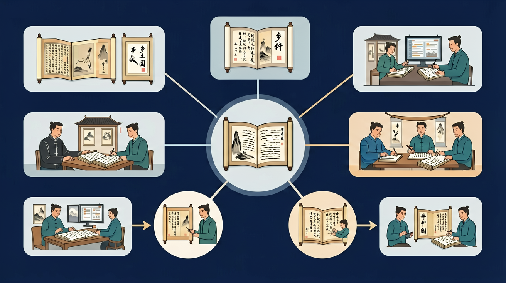

在指定范围内选择阅读一部学术著作。通读全书，勾画圈点，争取读懂；梳理全书大纲小目及其关联，做出全书内容提要；把握书中的重要观点和作品的价值取向。

🎯 能说出差序格局、礼治秩序等核心概念的定义
🎯 能分析具体社会现象中的乡土性特征
🎯 能比较中西方社会结构差异对人际关系的影响
❓ 为什么费孝通说乡下人‘土’不是在骂人？
❓ 差序格局和水波纹有啥关系？
❓ 现在都用微信了，书里说的乡土社会还存在吗？
学完这一课，这些问题你都能自信地回答。
《乡土中国》的核心研究方法是什么？
下列哪项不属于‘乡土性’特征？
选择或输入后，这节课会围绕你的问题展开。
学习「《乡土中国》（学术论著阅读）」时，第一步最应该做什么？
先选一个，错了正好暴露你的前概念，我们一起纠正。
《乡土中国》（学术论著阅读）是高中语文的重要内容。在指定范围内选择阅读一部学术著作。通读全书，勾画圈点，争取读懂；梳理全书大纲小目及其关联，做出全书内容提要；把握书中的重要观点和作品的价值取向。
通过反复阅读和思考，探究本书的语言特点和论述逻辑。
学习路径：明确概念→掌握方法→情境练习→反思纠错。
本任务群在必修阶段安排1学分，18课时。应完成一部长篇小说和一部学术著作的阅读，重在引导学生建构整本书的阅读经验与方法。
学术论著阅读要抓住核心概念（如差序格局、礼治秩序、血缘与地缘等），理清作者问题意识与论证逻辑，并能用概念解释社会生活现象。读“乡下人”相关章节要避免刻板偏见，理解其分析框架。
每章提炼 1–2 个概念定义，自己举生活例子验证；比较概念之间关系。
常见误区：常见误区是概念识记却不会迁移解释现实。
阅读学术论著的关键是？
And：学生知道人际关系有亲疏远近
But：不理解中国乡土社会的关系网为何像石子入水般扩散
Therefore：通过差序格局理解中国人情社会的底层逻辑
差序格局是费孝通提出的中国乡土社会关系模型，像石子投入水面形成的同心圆波纹。每个人以自己为中心，按血缘、地缘等标准向外推展关系，越往外关系越淡。例如：传统农村家庭中，儿子结婚优先找本村姑娘（地缘近），彩礼比外村少2-3成（关系强度量化）。这种弹性网络与西方团体格局的固定边界形成对比。
🌍 春节拜年顺序就是差序格局的活例子：先给父母磕头（核心圈），再走叔伯家（二级圈），最后是远房亲戚（外围圈），红包金额从500元递减到50元。
下列哪项最符合差序格局特征？
用思维导图拆解‘差序格局’的同心圆结构
结合‘男女有别’章节分析传统婚恋观的乡土根源
对比‘团体格局’与‘差序格局’的组织方式差异
观察春节走亲戚中的差序格局实践
用乡土性解释现代社区团购的信任机制
复制提示词到 AI 学伴，生成「乡土中国」的思维导图或赏析提纲；也可以上传你手绘的示意图，请 AI 学伴点评。
复制后可粘贴到 AI 学伴继续对话。
下列哪项属于'文字下乡'的真正障碍？
设计对比方案验证'直播带货对乡村差序格局的影响'
关于《乡土中国》（学术论著阅读）的学习，哪种做法最科学？
选一个并查看反馈。
先独立作答，再点选项查看对错与错因。
调研中'电子节气屏'与'手写族谱'并存现象，最能印证《乡土中国》哪一观点？
下列哪项不符合'礼治秩序'在现代乡村的表现？
AR社戏引发争议，持反对意见的老人最可能基于：
费孝通指出乡土社会是'____社会'，现代科技介入本质是'____的变迁'。
答案：礼俗 名实
前者为基本社会形态，后者指形式与内容分离
年轻店主用'____'方式实现文化适应，老人坚守'____'体现文化惰性。
答案：符号化再生产 身体惯习
前者指抽象传承，后者为布迪厄理论概念
✅ 礼治是约定俗成的规范体系
💡 混淆了非正式制度与个人意志
✅ 城市熟人圈层同样存在差序特征
💡 将空间形态与社会结构简单对应
口诀：差序如波纹，礼治定尊卑，血缘是根基，乡土藏智慧
类比：人际关系像投石入水，亲疏远近就像荡开的涟漪
（高考真题）费孝通用‘捆柴’比喻西方社会的什么结构？
（迁移题）疫情期间‘小区团购团长’现象最能体现：
（情境题）当今年轻人‘断亲’现象冲击的是：
点击节点跳转到对应章节；可切换布局。